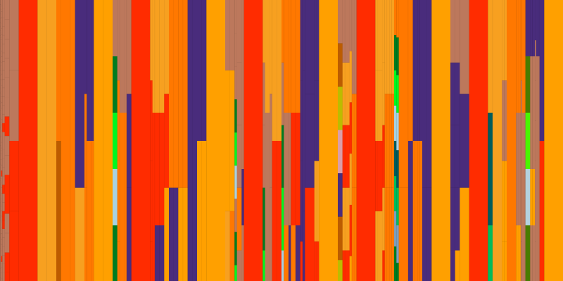

tidal-vis
This post is from 2016 and has not been updated for the latest version(s) of Tidal.
There's a hidden gem in the TidalCycles git repository called tidal-vis. It
allows you to use TidalCycles pattern syntax (and Haskell functions) to create
visual color patterns:

I have no idea what code I used to generate the image above, but I assure you that it was really easy, given my existing knowledge of TidalCycles and Haskell.
BUT, installing tidal-vis takes a bit of effort. So here's how you do it.
DISCLAIMER: I have only gotten this install to work on Linux Mint 18/Cinnamon. I imagine the install is similar on a Mac. On Windows, I would recommend trying the install with the Windows Subsystem for linux (otherwise the build tool chain is too difficult to install and configure, at least for me).
1. Install Dependencies
Open a terminal and run each of these commands (assuming apt-get on debian Linux):
sudo apt-get install git haskell-platform libghc-gtk-dev
cabal update
cabal install cabal-install
cabal install gtk2hs-buildtools2. Install TidalCycles
You can skip this step if you already have TidalCycles installed.
cabal install tidal3. Clone the TidalCycles repository
There currently is some ambiguity around whether tidal-vis is correctly
published to Hackage to be installed from cabal. My approach is to
just get the source code and install tidal-vis from the source code later.
git clone https://github.com/tidalcycles/tidal.gitNOTE: Remember where you cloned (e.g. ~/tidal).
4. Install tidal-vis
Did you remember where you cloned? I'll assume ~/tidal:
cd ~/tidal/vis
cabal installBam. But you're not ready yet...
5. Install Atom and the TidalCycles package
If you're already using Atom and TidalCycles, then you've already done this.
- go to atom.io
- download and install Atom
- In Atom, install the TidalCycles package
- restart Atom
The instructions are also given at https://tidalcycles.org/getting_started.html#installation
6. Evil Laugh
If you got this far without any problems, congratulations. Cackle deeply.
Let's Make Patterns
Open Atom. Create and save a file with a .tidal extension. If you ignore this step, TidalCycles will not work.
Enter the following code in the file:
import Sound.Tidal.Vis
import qualified Graphics.Rendering.Cairo as C
import Data.Colour
import Data.Colour.Names
import Data.Colour.SRGB
let draw pat = vLines (C.withSVGSurface) "test.svg" (600,200) pat 3 1Evaluate each of those lines one by one (Shift+Enter in Atom).
Then type or paste the following code into the file:
draw $ superimpose (iter 8) $ every 2 (slow 3) $
every 3 (density 5) $ "[grey white black, lightgrey darkgrey]"Eval the code. It will generate a file named "test.svg" somewhere on your system. In my case, it was put in my home directory. It will look like this:

What's next?
Play! Modify the draw code above and see what else you come up with.
If you'd like to really dig in
to some of the color- and drawing-specific functions, you'll have to kind of
find that information on your own. My best recommendation is to look at
the example.hs file located in the TidalCycles repository:
github.com/tidalcycles/Tidal/blob/master/vis/examples/example.hs.